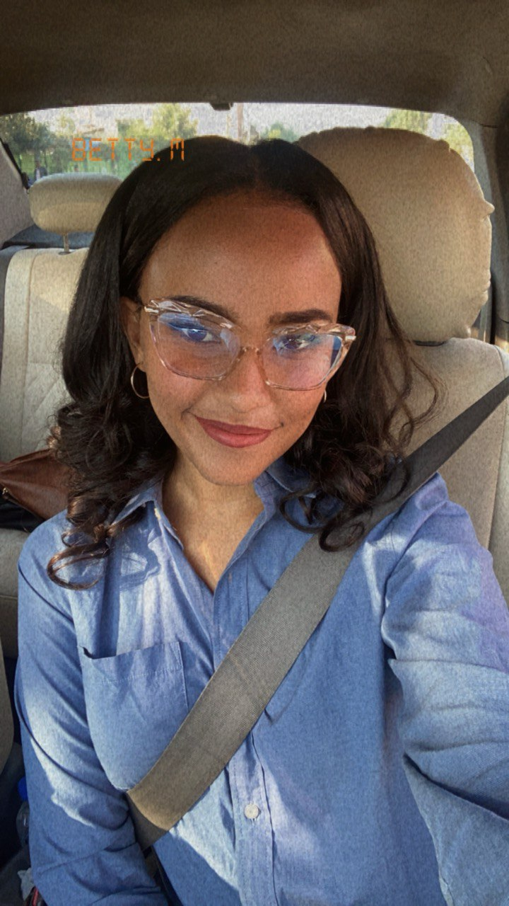

Summary
Digital Marketing Coordinator with 3+ years of experience in social media management, digital campaigns, analytics, and content marketing.
Skilled in Hootsuite, Google Analytics, digital ad management, email marketing, and content management systems.
Adept at developing data-driven strategies, optimizing engagement, and managing multi-channel campaigns.
Passionate about enhancing brand presence and customer engagement through innovative digital strategies.
Education
Bachelor’s in computer science
Addis Ababa University – Addis Ababa, Ethiopia | October 2016 - 2020
Work experience
Marketing & Communications Manager
- Developed and executed comprehensive digital marketing strategies for the company and its seven projects.
- Managed social media platforms using Hootsuite, increasing engagement and audience reach
- Monitored digital campaign performance using Google Analytics, optimizing strategies for better results.
- Led a six-member marketing team, ensuring seamless execution of social media campaigns and email marketing.
- Assessed ad effectiveness using KPIs and generated weekly, monthly, and annual performance reports.
- Coordinated with external agencies to enhance SEO, PPC, and content marketing efforts.
- Increased social media engagement by 45% and boosted website traffic by 30% within six months through targeted digital campaigns and strategic content optimization.
Partnership Engagement Officer
- Led digital outreach efforts, acquiring 10+ partnerships for brand collaboration and sponsorships.
- Managed email marketing campaigns, improving audience retention and donor engagement.
- Developed proposals and research documents to support digital partnerships and brand positioning.
- Spearheaded the development and execution of 10+ partner-focused marketing initiatives, aligning brand messaging and strategic campaigns to drive audience engagement and maximize visibility.
Event Manager & Content Creator
- Managed social media content creation, scheduling, and optimization across five platforms.
- Designed and executed digital marketing strategies, increasing brand engagement by 40%.
- Maintained and updated email marketing campaigns, newsletters, and promotional materials.
- Increased client engagement by 50% through strategic event marketing and interactive digital campaigns, leading to a 25% rise in repeat customers.
Social Media Management and Graphics Designing
- Developed social media strategies and created engaging content to boost brand visibility.
- Managed campaigns across Instagram, Facebook, LinkedIn, TikTok, Twitter, and Telegram.
- Implemented SEO and paid advertising strategies, increasing website traffic and conversions
- Created digital ad creatives and promotional graphics using Photoshop and Illustrator.
Skills
- Digital Marketing & Strategy: ⭐⭐⭐⭐⭐
- Analytics & Reporting: ⭐⭐⭐⭐
- Social Media Tools: ⭐⭐⭐⭐⭐
- Content Management & SEO: ⭐⭐⭐⭐
- Design & Creativity: ⭐⭐⭐⭐⭐
- Communication & Collaboration: ⭐⭐⭐⭐
Achievements
Others